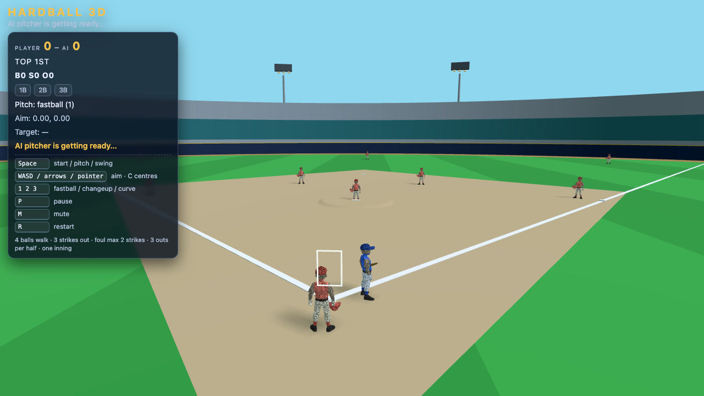

11–15 November 2026
Qwen 3.8 Flash Next + Qwen Image 2.1 + TRELLIS.2
Sushi 1.6.0 · Tenaz 0.7.0, multiple builds · fx 0.0.16
Session partial Local run
Unsatisfactory prototype: COMPLETE_WITH_GAPS, final review CHANGES, despite passing model-written checks. The bootstrap allowed a rigid-body animation plan; the implementation hides the moving procedural limbs and does not anchor props convincingly to the generated hands. Runner repairs and operator pauses were needed. See the run sheet for the measured segments and remaining gameplay faults.